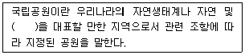
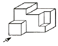
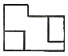
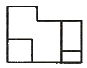
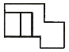
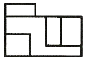
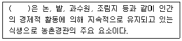
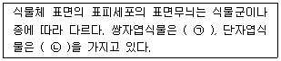
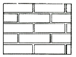
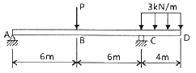

조경산업기사 (2013-09-28 기출문제)
1과목: 조경계획 및 설계
1. 다음 중 건축물의 노후화를 억제하거나 기능 향상 등을 위하여 대수선하거나 일부 증축하는 행위를 말하는 용어는?
- 대수선
- 재개발
- 재건축
- 리모델링
(정답률: 91%)

2. 시야의 중거리 혹은 단거리에서 시선의 장애물이 없이 조망할 수 있는 펼쳐진 경관은?
- 지형(feature) 경관
- 전(panoramic) 경관
- 위요(enclosure) 경관
- 세부(setail) 경관
(정답률: 89%)
3. 시각적 효과 분석 및 미시적 분석에 관한 연결이 옳지 않은 것은?
- 틸(1961) - 공간형태의 표시법
- 할프린(1965) - 움직임의 표시법
- 린치(1979) - 도시의 이미지 분석 연구
- 레오폴드(1969) - 형태와 행위의 일치성 연구
(정답률: 63%)
4. 다음 자연공원에 대한 설명 중 ( )안에 알맞은 용어는?

- 생태경관
- 문화경관
- 역사경관
- 지리경관
(정답률: 56%)
5. 다음 중 시방서의 작성은 어느 단계에 해당하는가?
- 조사
- 기본계획
- 설계
- 시공
(정답률: 74%)
6. 연간이용자수가 3만명, 3계절형(1/60), 시설개장시간은 10시간, 평균체재시간은 4시간인 시설지의 최대시 이용자수는?
- 125명
- 200명
- 300명
- 500명
(정답률: 62%)
7. 조경식물의 한자 이름 중 “부용(芙蓉)”에 해당하는 것은?
- 연
- 차나무
- 백목련
- 배롱나무
(정답률: 79%)
8. 신라 헌강왕(875~885)이 어무상심무(御舞祥審舞)란 춤을 추고, 유상곡수연(流觴曲水宴)을 하던 조경 유적은?
- 경주 월성의 남천(南川)
- 안압지(雁鴨池)
- 포석정지(鮑石亭址)
- 불국사 구품연지(九品蓮池)
(정답률: 73%)
9. 17세기 중엽 프랑스의 조경이 이탈리아의 모방에서 벗어나 독창적인 평면기하학식 정원으로 만들어 지는데 기여한 조경가는?
- 르 노트르
- 메이어
- 브리지맨
- 옴스테드
(정답률: 85%)
10. 발해(渤海)의 조경 유적으로 거대한 궁성지(宮城址)와 조산(造山) 원지(苑池) 및 원림(苑林)터가 발굴되었는바 다음 중 어느 곳인가?
- 중국 통구 국내성(國內城) 유적이다.
- 중국 흑룡강성 영안현의 상경용천부(上京龍泉府) 유적이다.
- 중국 대명궁(大明宮) 유적이다.
- 중국 낙양(洛陽)의 원림(苑림林) 유적이다.
(정답률: 60%)
11. 우리나라 최초의 서양식으로 꾸며진 정원이라고 볼 수 있는 것은?
- 덕수궁 석조전 정원
- 비원
- 파고다 공원
- 보라매 공원
(정답률: 83%)
12. 세계 7대 불가사의의 하나인 공중정원(hanging garden)은 어느 왕에 의하여 만들어 졌는가?
- 길가메시(Gilgamesh)
- 네부카드넷자르(Nebuchadnezzar) 2세
- 하체프스트(Hatschepsut)
- 다리우스(Darius)
(정답률: 88%)
13. 다음 조선왕릉 중 경기도 남양주시에 소재하고 있는 것은?
- 정릉
- 장릉
- 의릉
- 홍유릉
(정답률: 80%)
14. 에도(江戶)시대 다정(茶庭)의 발달도 정원구성에 가장 중요한 요소로 나타난 것은?
- 색모래
- 바위
- 수수분(手水盆)
- 소나무
(정답률: 73%)
15. 표준 골프코스는 18홀, 72파(par)로 구성한다. 다음 중 표준 골프코스의 구성으로 알맞게 된 것은?
- 쇼트홀 4개, 미들홀 8개, 롱홀 6개
- 쇼트홀 4개, 미들홀 6개, 롱홀 8개
- 쇼트홀 6개, 미들홀 6개, 롱홀 6개
- 쇼트홀 4개, 미들홀 10개, 롱홀 4개
(정답률: 75%)
16. 그림과 같은 입체도에서 화살표 방향을 정면으로 할 경우 정면도로 가장 적합한 것은?





(정답률: 81%)
17. 제도용지의 규격에 있어서 가로와 세로의 비로써 옳은 것은?
- √2 : 1
- 2 : 1
- √3 : 1
- 3 : 1
(정답률: 71%)
18. 색의 감정에 관한 설명 중 틀린 것은?
- 중량감 : 고명도일수록 가볍게 느껴지고, 저명도일수록 무겁게 느껴진다.
- 경연감 : 시각적 경험 등에 의하여 색채가 부드럽게 또는 딱딱하게 느껴지는 것을 말한다.
- 조목성 : 시선을 끄는 성질이 우수한 색채는 판독성이나 시인도가 떨어지는 것이 특징이다.
- 명시도 : 색의 명시도는 시인도라고도 하며 색상, 명도, 채도의 차이에서도 일어난다.
(정답률: 75%)
19. 다음 조형미의 원리를 설명한 것 중 옳지 않은 것은?
- 강조 - 동질적 요소들의 소극적 변화를 통하여 조화를 얻는다.
- 율동 – 반복의 방법에 따라 유동성 있는 표현을 이룬다.
- 균형 – 좌우대칭 혹은 좌우균등한 상태는 안정감을 얻을 수 있는 통일의 조건이다.
- 대비 – 상반된 조건이 강조되면 강한 인상을 줄 수 있으나 안정감은 잃기 쉽다.
(정답률: 82%)
20. 다음 중 어린이공원에 설치 될 그네의 설계기준으로 옳지 않은 것은? (단, 조경설계기준을 적용한다.)
- 집단적인 놀이가 활발한 자리 또는 통행량이 많은 곳에는 배치하지 않는다.
- 2인용을 기준으로 높이 2.3~2.5m, 길이 3.0~3.5m, 폭 4.5~5.0m를 표준규격으로 한다.
- 지지용 수평파이트는 어린이가 올라 모험을 즐길 수 있는 단순하고 쉬운 구조로 설계한다.
- 안장과 모래밭과의 높이는 35~45cm가 되도록 하며, 이용자의 나이를 고려하여 결정한다.
(정답률: 71%)
2과목: 조경식재
21. 인공지반위에 식재할 때 고려해야 할 사항 중 적합하지 않은 것은?
- 중량이 가벼운 흙을 쓰도록 한다.
- 방수를 철저히 하여 빗물이 배수되지 않도록 유의한다.
- 교목은 지주를 세워 바람에 쓰러지지 않도록 한다.
- 스프링클러를 설치하여 주기적으로 관술르 해주어야 한다.
(정답률: 81%)
22. 한 공간의 외곽 경계부위나 원로를 따라 식재하여 여러 가지 효과를 얻고자 하는 식재형식으로 관목류를 주조(主調)로 하여 식재대를 구성하는 것은?
- 산울타리식재
- 군집식재
- 경재식재
- 강조식재
(정답률: 57%)
23. ‘Magnolia sieboldii K. Koch’에 대한 설명으로 가장 거리가 먼 것은?
- 향기가 없다.
- 낙엽활엽소교목이다.
- 꽃은 5~6월에 개화한다.
- 산목련이라고도 불린다.
(정답률: 77%)
24. 다음 중 우리나라 난대림 지역에서 분포하는 수종으로만 짝지어진 것은?
- 녹나무, 구실잣밤나무
- 잣나무, 피나무
- 팽나무, 서어나무
- 소나무, 자작나무
(정답률: 60%)
25. 다음 중 방화수(防化樹)가 갖추어야 할 조건으로 옳지 않은 것은?
- 잎이 많은 수분을 갖는 것
- 상록수인 동시에 지엽이 밀생하고 있는 것
- 잎이 작거나 가느다란 것
- 수관(樹冠)의 중심이 추녀보다 낮은 위치에 있을 것
(정답률: 83%)
26. 다음 생강나무와 산수유에 대한 설명 중 틀린 것은?
- 둘 다 이른 봄에 노란색 꽃이 핀다.
- 둘 다 잎의 배열은 대생이다.
- 생강나무는 낙엽활엽관목이고, 산수유는 낙엽활엽교목이다.
- 생강나무는 녹나무과, 산수유는 층층나무과이다.
(정답률: 68%)
27. 다음 중 생울타리용 조경수로 가장 부적합한 것은?
- Ilex crenata Thund. var. crenata
- Poncirus trifoliata Raf.
- Thuja orientalis L.
- Corylopsis gotoana var. coreana (Uyeki) T. Yamaz.
(정답률: 39%)
28. 다음 중 열매의 형태가 다른 수종은?
- 전나무
- 구상나무
- 비자나무
- 분비나무
(정답률: 49%)
29. 도심의 자동차 왕래가 잦은 지역에 식재하기 가장 부적합한 것은?
- 금목서, 단풍나무
- 태산목, 양버즘나무
- 감탕나무, 가중나무
- 식나무, 향나무
(정답률: 68%)
30. 학명의 종명 이름 중 서식지를 표현한 것은?
- pendula
- orientale
- alpina
- ravenii
(정답률: 76%)
31. 중부지방의 동백나무 이식 적기로 가장 적합한 것은? (문제 오류로 실제 시험에서는 2, 3번이 정답처리 되었습니다. 여기서는 2번을 누르면 정답 처리 됩니다.)
- 4월상순에서 중순
- 5월에서 6월
- 9월상순에서 중순
- 2월에서 3월
(정답률: 85%)
32. 다음 식물 중 기생식물에 해당되지 않은 종은?
- 겨우살이
- 실새삼
- 이삭귀개
- 초종용
(정답률: 60%)
33. 경관식재에서 주연부식재는 주변의 지형과 식생, 경관 등과 조화되고, 생태적으로 안정된 식생구조를 얻기 위한 식재로 다음 중 주연부식재로 많이 사용되는 상록활엽수는?
- Camellia japonica L.
- symplocos chinensis for. pilosa (Nakai) Ohwi
- Stephanandra incisa (Thunb.) Zabel var. incisa
- Carpinus laxiflora (siebold & Zucc.) Blume
(정답률: 45%)
34. 풍치공원 부지의 식생 입지 파악을 위해 필요한 조사 사항으로 부적합한 것은?
- 토지이용 현황과 군락의 조사
- 주변 자연식생 조사
- 토양 단면조사와 토양분석
- 고손목과 잔존 교목 조사
(정답률: 63%)
35. 다음 수종 중 수피가 녹색인 종은?
- Paulownia coreana Uyeki
- Firmiana simplex (L.) W.F. Wight
- Catalpa ovata G. Don
- Lonicera japonica Thunb.
(정답률: 55%)
36. 다음 중 석회암지대(염기성토양)에서도 가장 잘 견딜 수 있는 수종은?
- Pinus rigida Mill.
- Lespedeza bicolor Turcz.
- Abies holophylla Maxim.
- Acer palmatum Thunb.
(정답률: 46%)
37. 다음 설명의 ( )에 적합한 용어는?

- 천이식생
- 이차식생
- 대상식생
- 잠재식생
(정답률: 61%)
38. 다음 수종 중 가지에 가시가 있는 것은?
- 당매자나무
- 노간주나무
- 호랑가시나무
- 피나무
(정답률: 65%)
39. 다음 보기 중 ( )안에 적합한 용어는?

- ㉠ : 평행맥, ㉡ : 장상맥
- ㉠ : 그물맥, ㉡ : 부정맥
- ㉠ : 망상맥, ㉡ : 평행맥
- ㉠ : 격자맥, ㉡ : 원형맥
(정답률: 76%)
40. Cercis chinensis Bunge 에 대한 설명으로 맞는 것은?
- 열매는 협과로 8~9월경에 성숙한다.
- 낙엽활엽교목으로 음수이다.
- 원산지는 일본으로 이식이 쉽다.
- 꽃색은 황색으로 산울타리용으로 적합하다.
(정답률: 47%)
3과목: 조경시공
41. 축척 1:500 지형도(30cm×30cm)를 기초로 하여 축척이 1:2500인 지형도(30cm×30cm)를 제작하기 위해서는 축척 1:500 지형도가 몇 매 필요한가?
- 5매
- 10매
- 15매
- 25매
(정답률: 70%)
42. 공사용 재료의 경사면 소운반 거리 산정시 수직높이 3m는 수평거리 얼마에 해당하는가? (단, 건설공사표준품셈을 기준으로 한다.)
- 15m
- 18m
- 21m
- 24m
(정답률: 79%)
43. 흙의 안식각이란 무엇을 나타내는가?
- 흙의 마찰각
- 자연 비탈각
- 흙깎기 경사각
- 흙쌓기 경사각
(정답률: 63%)
44. 다음 중 목재의 전기저항에 가장 적은 영향을 미치는 인자는?
- 수종
- 온도
- 함수율
- 섬유주향
(정답률: 62%)
45. 감독자가 공사의 일시중지를 지시할 수 있는 경우가 아닌 것은?
- 준공까지 공사기한에 여유가 있을 경우
- 시공자가 설계도서 대로 시공하지 않을 경우
- 공사 종사원의 안전에 영향을 미치게 될 경우
- 시공자의 공사시공방법이 미숙하여 조잡한 공사가 우려될 경우
(정답률: 83%)
46. 다음 비탈면 녹화공법은 기계시공과 인력시공으로 구분할 수 있다. 다음 중 기계시공에 해당하는 것은?
- 볏짚거적덮기
- 식생혈공
- 식생반공
- 식생자루공법
(정답률: 66%)
47. 다음 재료 중 재료 할증율이 가장 작은 것은?
- 원형철근
- 원석(마름돌용)
- 블록
- 조경용수목
(정답률: 59%)
48. 다음 시멘트 중 수경률이 가장 큰 시멘트는?
- 보통 포틀랜드 시멘트
- 백색 포틀랜드 시멘트
- 조강 포틀랜드 시멘트
- 중용열 포틀랜드 시멘트
(정답률: 62%)
49. 다음 중 석재의 일반적 강도에 관한 설명으로 옳지 않은 것은?
- 강도는 중량에 비례한다.
- 함수율이 클수록 강도는 저하된다.
- 구성입자가 작을수록 압축강도가 크다.
- 강도의 크기는 휨강도 ＞ 인장강도 ＞ 압축강도 이다.
(정답률: 80%)
50. 배수 지역이 방대해서 하수를 한 곳으로 모으기 곤란할 경우에 이용되는 배수 계통은?
- 방사식(放射式)
- 선형식(扇形式)
- 직각식(直角式)
- 차집식(遮集式)
(정답률: 86%)
51. 비철금속 중 알루미늄 재료에 대한 설명으로 옳은 것은?
- 순도가 높은 것은 표면에 산화피막이 생겨 잘 부식된다.
- 알루미늄은 독특한 흰 광택을 지닌 중금속으로 광선 및 열 반사율이 크다.
- 연성, 전성이 나빠서 가공하기 어렵고 얇은 부재로 만들기도 어렵다.
- 산이나 알칼리 및 해수에 침식되기 쉬우므로 해안가 공사 시 특히 주의해야 한다.
(정답률: 62%)
52. 석재의 비중은 조암광물의 성질·비율·공극의 정도 등에 따라 달라진다. 다음 중 일반적으로 비중이 가장 높은 것은?
- 화강암
- 안산암
- 사문암
- 응회암
(정답률: 48%)
53. 리어카의 1회 운반량은 250kg이다. 콘크리트를 현장배합하기 위해 시멘트 2m3를 동시에 운반할 때 리어카는 몇 대가 필요한가? (단, 시멘트의 단위중량은 1500 kg/m3 이다.)
- 6대
- 12대
- 18대
- 24대
(정답률: 65%)
54. 콘크리트의 거푸집 촉압에 관한 일반적인 설명으로 틀린 것은?
- 타설속도가 빠르면 측압이 커진다.
- 철근량이 적을수록, 온도가 높을수록 측압이 크다.
- 응결시간이 빠른 시멘트를 사용할수록 측압이 작다.
- 단면이 작은 벽보다 단면이 큰 기둥에서 측압이 크다.
(정답률: 52%)
55. 다음 그림과 같은 벽돌의 쌓기 방식으로 가장 적합한 것은?

- 마구리쌓기
- 길이쌓기
- 옆세워쌓기
- 길이세워쌓기
(정답률: 73%)
56. 그림과 같은 보이세 지점 A에서의 반력이 0이 되려면 P는 몇 kN인가?

- 2
- 3
- 4
- 5
(정답률: 55%)
57. 지상 고도 2000m의 비행기 위에서 화면 거리 152.7mm의 사진기로 촬영한 수직 공중 사진상에서 길이 50m의 교량은 몇 mm 정도로 촬영되는가?
- 1.2mm
- 2.5mm
- 3.8mm
- 4.2mm
(정답률: 68%)
58. 강(鋼)의 조직을 미세화하고 균질의 조직으로 만들며 강의 내부 변형 및 응력을 제거하기 위하여 변태점 이상의 높은 온도로 가열한 후 대기중에서 냉각시키는 열처리 방법은?
- 풀림(annealing)
- 불림(normalizing)
- 담금질(quenching)
- 뜨임질(tempering)
(정답률: 65%)
59. 골재의 함수 상태에 따른 설명으로 옳지 않은 것은?
- 표건상태 : 내부는 포화상태이나 표면은 수분이 없는 상태
- 습윤상태 : 골재의 내부는 이미 포화상태이고, 표면에도 수분이 있는 상태
- 기건상태 : 골재를 공기 중에 24시간 이상 건조하여 골재 속에 수분이 없는 상태
- 절건상태 : 골재르 100~110℃의 온도 상태에서 중량변화가 없어질 때까지 건조하여 골재 속의 모세관 등에 흡수된 수분이 거의 없는 상태
(정답률: 66%)
60. 다음 조경시설물 공사에 필요한 가설공사 중 규준(規準)틀 설치에 관한 설명으로 틀린 것은?
- 수평규준틀은 벽돌쌓기, 블록쌓기 등 조적공사의 수평보기에 사용된다.
- 규준틀은 통나무 또는 각목을 사용한다.
- 규준틀은 건축물의 주요지점에 설치하여 건축물의 모양과 위치를 측정한다.
- 수평규준틀은 규준틀 설치 평면 배치도를 작성하여 개소당품을 적용하는 것이 원칙이다.
(정답률: 48%)
4과목: 조경관리
61. 콘크리트 옹벽이 앞으로 무너질 염려가 있을 때 조치사항으로 적당하지 않은 것은?
- 원지반의 암질이 좋을 때는 P.C앵커로서 원지반과 콘크리트 옹벽을 묶어 놓는다.
- 기초의 침하우려가 없을 때는 옹벽 앞면에 부벽식 콘크리트 옹벽을 설치한다.
- 옹벽 뒷면에 지하수 배수구멍을 뚫고 물을 콘크리트 옹벽 바깥으로 유도시켜 토압을 경감시킨다.
- 옹벽 기초부분 앞에 도랑을 파서 옹벽의 활동을 유도시켜 무너짐을 막도록 한다.
(정답률: 56%)
62. 레크레이션 수용능력의 고정적 결정인자에 해당하지 않는 것은?
- 특정활동에 대한 참여자의 반응정도
- 특정활동에 대한 필요한 사람의 수
- 특정활동에 필요한 공간의 최소면적
- 대상지의 크기와 형태
(정답률: 60%)
63. 수목병 발생과 관련된 병삼각형(disease triangle)의 구성 주요인이 아닌 것은?
- 시간
- 환경
- 기주식물
- 병원균
(정답률: 74%)
64. 봄에 꽃이 피는 진달래, 철쭉류 등과 같이 꽃을 감상하기 위한 목적으로 하는 수목의 전정 시기는?
- 꽃이 진 직후
- 늦가을 낙엽이 진 직후
- 이른 봄 싹트기 전
- 겨울철 휴면기
(정답률: 75%)
65. 아스콘 혹은 콘크리트 포장의 균열이 보이고 일부 침하현상과 부분적으로 박리(剝離)현상이 생겼을 때 이용되는 공법은?
- 그라우팅공법
- 패칭(Patching)공법
- P.C 앵커공법
- 편책공법
(정답률: 72%)
66. 8000ppm을 퍼센트 농도로 바꾸면 얼마인가?
- 0.08%
- 0.8%
- 8%
- 80%
(정답률: 64%)
67. 농약의 품질불량이 원인이 되어 일어나는 약해가 아닌 것은?
- 동시사용으로 인한 약해
- 원제 부성분에 의한 약해
- 불순물의 혼합에 의한 약해
- 경시변화에 의한 유해성분의 생성에 의한 약해
(정답률: 69%)
68. 과린산석회나 어박(魚粕), 계분 등과 같은 인산질 비료는 식물의 어느 부분의 성장을 주로 돕는가?
- 잎을 무성하게 하며, 생육을 촉진시킨다.
- 개화 수를 증가시키고 결실을 돕는다.
- 가지나 줄기의 비대를 촉진시킨다.
- 뿌리의 신장에 도움을 준다.
(정답률: 57%)
69. 크게 자란 나무를 작게 유지하기 위하여 동일한 위치에서 새로 자란 가지를 1~3년 간격으로 모두 잘라 버리는 반복전정을 무엇이라 하는가?
- 생울타리 전정
- 두목작업
- 적심(摘心)
- 토피아리
(정답률: 62%)
70. 다음 중 잔디의 잎과 줄기에 불규칙한 황녹색 또는 황갈색의 점이 마치 동전처럼 무수히 나타나며, 주로 초여름과 초가을에 발병하는 것은?
- 브라운 패취(Brown patch)
- 잔디 탄저병(Antheacnose)
- 붉은 녹병(Rust)
- 달라스팟(Dollar spot)
(정답률: 66%)
71. 다음 중 2년생 잡초에 대한 설명으로 틀린 것은?
- 지칭개, 망초 등이 속한다.
- 로제트(rosette) 형태로 월동한다.
- 주로 온대지역에서 볼 수 있는 잡초이다.
- 월동이후 화아분화하여 개화, 결실한 후 고사한다.
(정답률: 72%)
72. 1년에 두 번 이상 발생하는 해충은? (문제 오류로 실제 시험에서는 1, 3번이 정답처리 되었습니다. 여기서는 1번을 누르면 정답 처리 됩니다.)
- 솔나방
- 밤바구미
- 낙엽송잎벌
- 대벌레
(정답률: 83%)
73. 영구위조점에서의 토양수분장력(pF) 값은 어느 정도인가?
- 3.2
- 4.2
- 5.2
- 6.2
(정답률: 67%)
74. 다음 중 잔디의 관수방법으로 적합하지 않은 것은?
- 잎과 줄기를 관수한다.
- 땅이 흠뻑 젖도록 관수한다.
- 햇볕이 잘 쪼이는 정오에 실시한다.
- 필요시 액체비료를 혼합하여도 좋다.
(정답률: 79%)
75. 유실수 중에서 밤나무의 종실(種實)을 가해하는 해충은?
- 밤나무혹벌
- 밤나무재주나방
- 밤나무왕진딧물
- 복숭아명나방
(정답률: 56%)
76. 뗏밥주기에 관한 설명으로 부적합한 것은?
- 잔디의 생육을 돕기 위하여 한지형 잔디는 봄, 가을에 뗏밥을 준다.
- 잔디의 생육을 돕기 위하여 난지형 잔디는 늦봄에서 초여름에 뗏밥을 준다.
- 뗏밥의 양은 잔디깎기의 정도에 따라 조절하는데, 잔디의 생육이 왕성할 때 얇게 1~2회 준다.
- 뗏밥의 두께는 1~2cm 정도로 주고, 다시 줄 때에는 30일이 지난 후에 주어야 하며, 봄철에 두껍게 한 번에 주는 경우에는 3~5cm 정도로 시행한다.
(정답률: 76%)
77. 참나무 시들음병에 대한 설명으로 틀린 것은?
- 매개층은 광릉긴나무종이다.
- 피해목은 초가을에 모든 잎이 낙엽된다.
- 피해목의 변재부는 병원균에 의하여 변색된다.
- 매개충의 암컷등판에는 곰팡이를 넣는 균낭이 있다.
(정답률: 58%)
78. 조경 시설물의 유지관리 사항으로 거리가 먼 것은?
- 청소
- 폐수물질의 제거
- 도장(塗裝)
- 보수(補修)
(정답률: 60%)
79. 수피에 구멍을 내어 비료성분을 주입하는 시비법에 해당하는 것은?
- 수간주사법
- 엽면시비법
- 토양내 시비법
- 표토시비법
(정답률: 83%)
80. 같은 조건하에서도 일시적으로 발아를 중지하고 휴면의 형태를 취하여 부적격 환경을 극복하려는 종자의 발아습성을 무엇이라 하는가?
- 발아 기회성
- 발아 계절성
- 발아 주기성
- 준동시성 발아
(정답률: 59%)